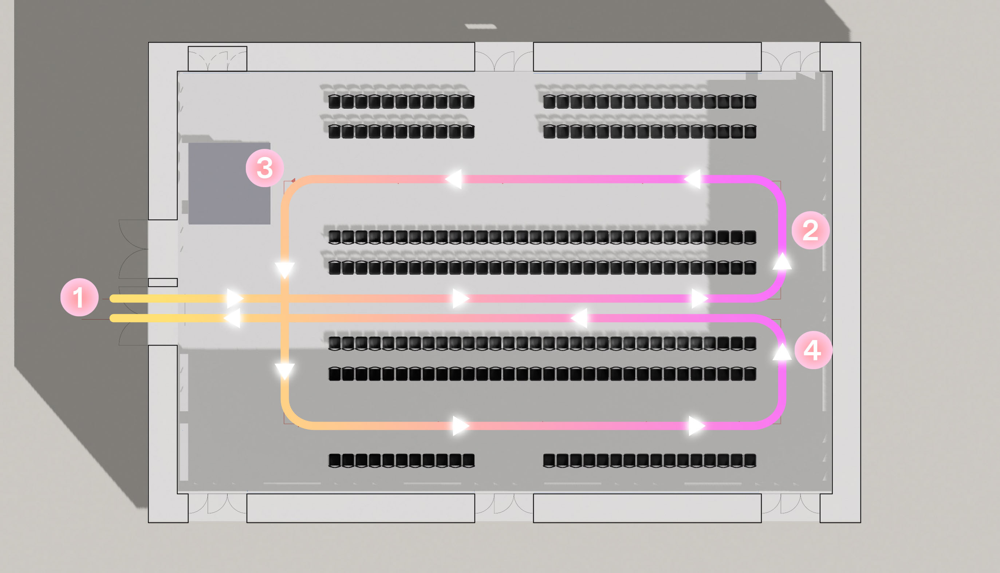

Welcome to the Training Center
Hello dear beautiful human beings! This is the Training Center for CFCL Vol. 10at Paris Fashion Week Womenswear Fall/Winter 2025-2026 We are very happy to be with you today :) Nile & Dylan
👣 Walking
Important! 1. The walk is fast, 120 bpm, in time with the music (see below). 2. Turn left at the end of the runway, without a stop. 3. Walk around the entire space, always turning left until you reach the end of the runway again. 4. Walk back down the runway and leave the space. • During the finale, the walk is slower. Make sure the gap between you and the models in front and behind you stays tight!
Walking speed (120bpm)
❄️ Atmosphere and mood
The show is being presented at IRCAM, a French research institute for avant-garde music and electro-acoustical sound. The atmosphere for the show is technical, as if you're working in a scientific research centre.
🎼 About the music
The music is a spatial composition by sound artist Miyu Hosoi based on recordings of CFCL knitting machines. Have a listen to the music before the show so you know what to expect:
🌎 Scenography & architecture
IRCAM's éspace de projection ("Espro") is a very high-tech space, featuring a moveable ceiling and mechanical walls that can be set to different acoustics. The scenography is kept very minimal to give the sound and looks the centre stage.
🪡 Collection
CFCL's knitwear is created through the intertwining loops of a single, flexible thread, capturing the essence of the times to create clothing for contemporary life. The Vol. 10 collection takes inspiration from social anthropologist Tim Ingold's book LINES: A Brief History, reflecting on the brand's origins and reimagining the trial-and-error process of creating clothing solely through knitwear as ‘lines.' These lines, curving, folding, and gradually expanding, illustrate the trajectory of CFCL's continuous exploration. By reinterpreting the ancient craft of spinning and knitting threads, rooted in human evolution, through the lens of modern technology and sensibilities, CFCL tells the story of 'Knit-ware' — an expression of free, bold lines that shape a new era.